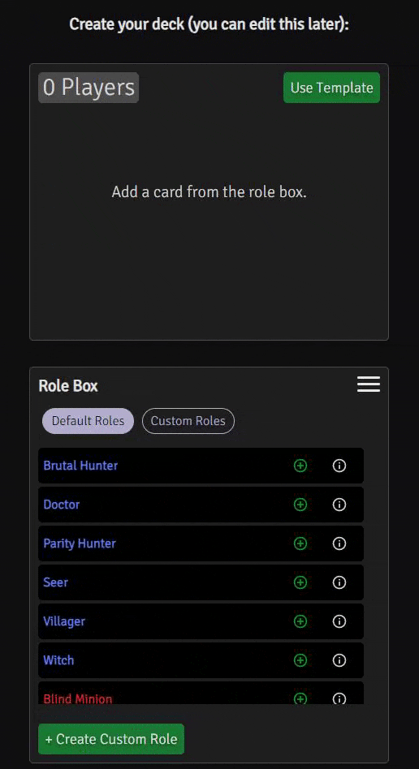
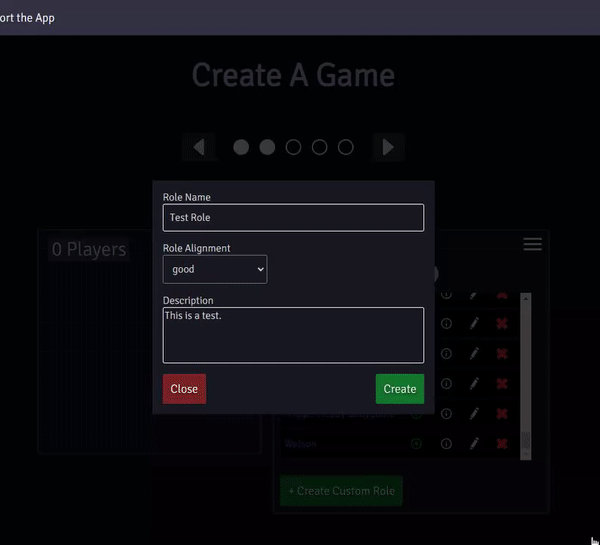
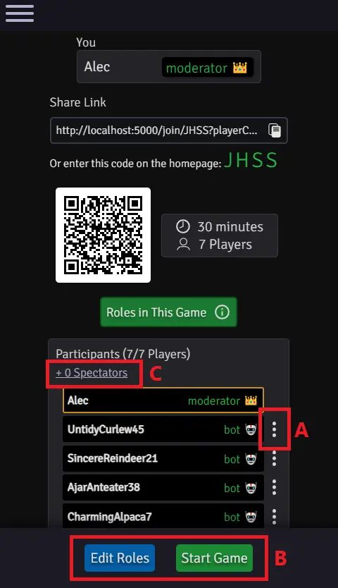
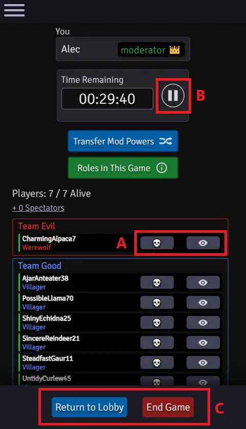
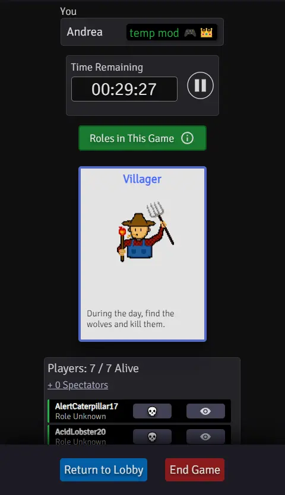
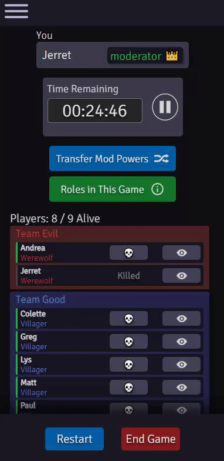
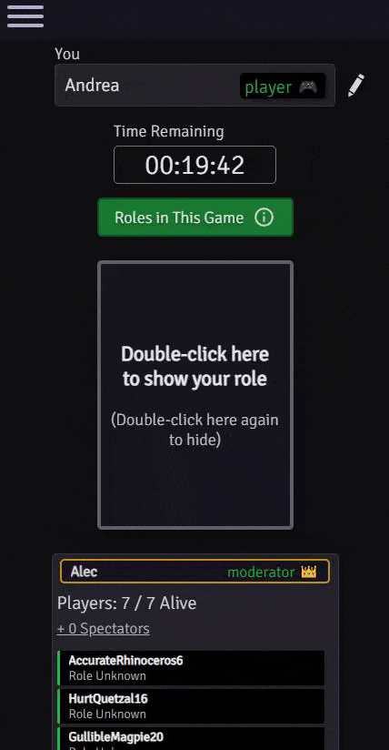

This app helps a group play Werewolf when meeting virtually, or when it's simply difficult to
play with physical cards. Set up games with any number of roles and deal them to everyone's device. It's flexible, free,
and doesn't require installing an app or creating an account. If you use this app, I'd love to hear about it. I
am always looking for ways to improve this tool.
Creating a game through the app has 3 main components:
- Step One: Choosing a method of moderation
Choose either the Dedicated
Moderator option or the Temporary Moderator option. Dedicated moderators
are not dealt into the game, while temporary moderators are. Both will have moderator powers, but temporary moderators
will not know anyone's role. When they first remove someone from the game, their moderator powers will be transferred to that person,
who will become a dedicated moderator.
Dedicated moderators can transfer their moderator powers to any player that has been eliminated,
or to a spectator. That way, if the current moderator has to leave, or simply does not want to moderate
anymore, they can easily delegate.
- Step Two: Build your deck
There is a Role Box on this page that includes a list of Default Roles and a list
of Custom Roles, which can be displayed by selecting the appropriate button within the box.
If you want to add a certain role to the game, click the green plus, and one copy
of it will be added to the Deck Box, which displays the added roles and the corresponding player count.
Likewise, if you want to remove one copy of a given role, click the red minus on the role
in the Deck Box.
Here I add 3 villagers to the game, and then remove them:

You can add, edit, and remove Custom Roles. You can also import and export them via a formatted text file. Click
the hamburger menu on the role box to see the import/export options. Here I create a new Custom Role, observe it
in the list, and add a copy of it to the game:

- Step Three: Set an optional timer
If you don't fill in these fields, the game will be untimed. If you do, you can use a time between 1 minute
and 5 hours. The timer can be played and paused by the current moderator. Importantly, when the timer expires,
nothing automatically happens. Users will be notified that it has expired, and the timer will display 0s, but
the game will not end. Moderators always choose to end the game manually.
- In the Lobby
In the Lobby, moderators can manage the people in the room and the cards in the game. By clicking
the three vertical dots (AKA the "kebab menu") next to a given player (point A
in the screenshot below), you have the option to kick that player. You can do the same with a spectator by first
viewing the spectator list (point C) and clicking their kebab menus. By clicking the
"Edit Roles" button (point B), you can change which roles are in the game and the
quantities of those roles. This button will bring up the same module you encountered when you first created the room.
Saving any changes to the roles may affect the player count. If you wish to start the game (point B), the number
of players in the lobby must equal the number of cards in the game.

- During the Game
Dedicated Moderators can see who is on which team and who is which role. The moderator
Kills and Reveals players (Point A below). They are separate actions. So, if you
want to play a game where people's roles are not revealed during the day or night, you can use the "Kill" option
but not the "Reveal" option. Or, if you happen to have a role that reveals but is not immediately removed from the game,
you can use the "Reveal" option but not the "Kill" option. You of course don't have to utilize either of these options.
If you just want to use the app to deal cards, you are free to do that. The moderator also has permission to
play and pause the timer (Point B), and can end the game (revealing everyone's role)
or return the game to the lobby (Point C), where it can be started again with different settings.

Similarly, the Temporary Moderator view looks like the below image. They have
much the same abilities as a dedicated moderator, except they don't know role or alignment information and cannot
transfer their powers. Their powers will be transferred automatically to the first person they remove from the game
(which can be themselves!).

- Transferring your moderator powers
You can transfer your moderator abilities to anyone that has been removed from the game, or to anyone that happens
to be spectating. Here we select a killed player and transfer our powers to them:

This is an example of what a Player is seeing, including the running timer,
their role card, and the player list. You can also edit your name for the room by clicking the pencil next to it.
Below, we flip our role card up and down by double-clicking it, and then we bring up the prompt to edit our name:

Players can view the timer, but only the current moderator can play and pause it. Your role card starts flipped over
- this is useful if you are in-person and don't want someone else accidentally seeing your role as
it is dealt. You can view your role at any time by double-clicking/double-tapping it. Requiring a double-click guards against the possibility
of accidentally flipping your role when tapping other things. Within the player list, you can see who is alive or
dead and who has had their role revealed. There is also a role info button that,
when pressed, displays all the different roles in the current game, including their descriptions and alignment (Good/Evil).